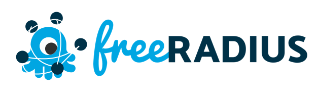
Nombre del estudiante: Jamiel Santana.
Matrícula: 2019-8095.
Facilitador: Geancarlos Sosa.
Asignatura: Fundamentos de Seguridad.
CentOS 7.
Freeradius.
GNS3.
Imágenes de disco de router y switch cisco.
Como primer paso comenzaremos actualizando el sistema con el siguiente comando.
- sudo yum -y update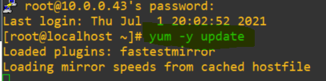
Después de actualizado el sistema cambiaremos Selinux a modo permisivo.
xxxxxxxxxxsudo setenforce 0sudo sed -i 's/^SELINUX=.*/SELINUX=permissive/g' /etc/selinux/config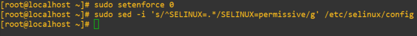
Comenzaremos con la instalación de httpd, y del development tools con los siguientes comandos.
xxxxxxxxxxsudo yum -y groupinstall "Development Tools"sudo yum -y install httpd httpd-devel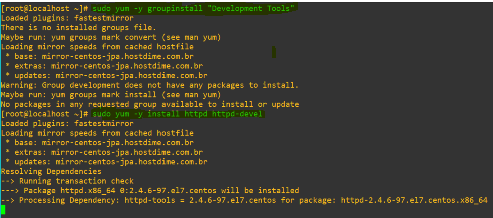
Iniciaremos el servicio web
x[jamiel@localhost ~]# sudo systemctl enable --now httpdCreated symlink from /etc/systemd/system/multi-user.target.wants/httpd.service to /usr/lib/systemd/system/httpd.service.[root@localhost ~]# systemctl status httpd● httpd.service - The Apache HTTP Server Loaded: loaded (/usr/lib/systemd/system/httpd.service; enabled; vendor preset: disabled) Active: active (running) since Thu 2021-07-01 20:39:04 EDT; 11s ago Docs: man:httpd(8) man:apachectl(8) Main PID: 29618 (httpd) Status: "Total requests: 0; Current requests/sec: 0; Current traffic: 0 B/sec" CGroup: /system.slice/httpd.service ├─29618 /usr/sbin/httpd -DFOREGROUND ├─29619 /usr/sbin/httpd -DFOREGROUND ├─29620 /usr/sbin/httpd -DFOREGROUND ├─29621 /usr/sbin/httpd -DFOREGROUND ├─29622 /usr/sbin/httpd -DFOREGROUND └─29623 /usr/sbin/httpd -DFOREGROUNDJul 01 20:39:04 localhost.localdomain systemd[1]: Starting The Apache HTTP Server...Jul 01 20:39:04 localhost.localdomain httpd[29618]: AH00558: httpd: Could not reliably determine the server's fully qualified domain name, using localhost.localdomain. Set the 'ServerName' di... this messageJul 01 20:39:04 localhost.localdomain systemd[1]: Started The Apache HTTP Server.Hint: Some lines were ellipsized, use -l to show in full.Lo primero que haremos es agregar el repositorio para poder agregarlo debidamente.
xxxxxxxxxx[jamiel@localhost ~]# sudo tee /etc/yum.repos.d/MariaDB.repo<<EOF> [mariadb]> name = MariaDB> baseurl = http://yum.mariadb.org/10.4/centos7-amd64> gpgkey=https://yum.mariadb.org/RPM-GPG-KEY-MariaDB> gpgcheck=1> EOF[mariadb]name = MariaDBbaseurl = http://yum.mariadb.org/10.4/centos7-amd64gpgkey=https://yum.mariadb.org/RPM-GPG-KEY-MariaDBgpgcheck=1[jamiel@localhost ~]#Agregado el repositorio podemos descargar Mariadb debidamente.
xxxxxxxxxxsudo yum -y install MariaDB-server MariaDB-client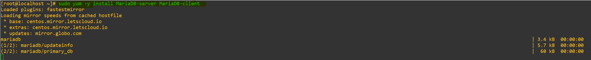
Ahora iniciaremos el servicio de Mariadb.
xxxxxxxxxxsudo systemctl start --now mariadbRevisamos el status del servidor.
xxxxxxxxxx[root@localhost ~]# systemctl status mariadb● mariadb.service - MariaDB 10.4.20 database server Loaded: loaded (/usr/lib/systemd/system/mariadb.service; disabled; vendor preset: disabled) Drop-In: /etc/systemd/system/mariadb.service.d └─migrated-from-my.cnf-settings.conf Active: active (running) since Thu 2021-07-01 20:48:24 EDT; 57s ago Docs: man:mysqld(8) https://mariadb.com/kb/en/library/systemd/ Process: 29945 ExecStartPost=/bin/sh -c systemctl unset-environment _WSREP_START_POSITION (code=exited, status=0/SUCCESS) Process: 29902 ExecStartPre=/bin/sh -c [ ! -e /usr/bin/galera_recovery ] && VAR= || VAR=`cd /usr/bin/..; /usr/bin/galera_recovery`; [ $? -eq 0 ] && systemctl set-environment _WSREP_START_POSITION=$VAR || exit 1 (code=exited, status=0/SUCCESS) Process: 29900 ExecStartPre=/bin/sh -c systemctl unset-environment _WSREP_START_POSITION (code=exited, status=0/SUCCESS) Main PID: 29913 (mysqld) Status: "Taking your SQL requests now..." CGroup: /system.slice/mariadb.service └─29913 /usr/sbin/mysqldComo próximo paso ahora ejecutaremos el mysql_secure_installation para configurar la base de datos.
xxxxxxxxxx[root@localhost ~]# mysql_secure_installationNOTE: RUNNING ALL PARTS OF THIS SCRIPT IS RECOMMENDED FOR ALL MariaDB SERVERS IN PRODUCTION USE! PLEASE READ EACH STEP CAREFULLY!In order to log into MariaDB to secure it, we'll need the currentpassword for the root user. If you've just installed MariaDB, andhaven't set the root password yet, you should just press enter here.Enter current password for root (enter for none):OK, successfully used password, moving on...Setting the root password or using the unix_socket ensures that nobodycan log into the MariaDB root user without the proper authorisation.You already have your root account protected, so you can safely answer 'n'.Switch to unix_socket authentication [Y/n] yEnabled successfully!Reloading privilege tables.. ... Success!You already have your root account protected, so you can safely answer 'n'.Change the root password? [Y/n] Y^CAborting!Cleaning up...[root@localhost ~]# clear[root@localhost ~]# mysql_secure_installationNOTE: RUNNING ALL PARTS OF THIS SCRIPT IS RECOMMENDED FOR ALL MariaDB SERVERS IN PRODUCTION USE! PLEASE READ EACH STEP CAREFULLY!In order to log into MariaDB to secure it, we'll need the currentpassword for the root user. If you've just installed MariaDB, andhaven't set the root password yet, you should just press enter here.Enter current password for root (enter for none):OK, successfully used password, moving on...Setting the root password or using the unix_socket ensures that nobodycan log into the MariaDB root user without the proper authorisation.You already have your root account protected, so you can safely answer 'n'.Switch to unix_socket authentication [Y/n] n ... skipping.You already have your root account protected, so you can safely answer 'n'.Change the root password? [Y/n] YNew password:Re-enter new password:Password updated successfully!Reloading privilege tables.. ... Success!By default, a MariaDB installation has an anonymous user, allowing anyoneto log into MariaDB without having to have a user account created forthem. This is intended only for testing, and to make the installationgo a bit smoother. You should remove them before moving into aproduction environment.Remove anonymous users? [Y/n] Y ... Success!Normally, root should only be allowed to connect from 'localhost'. Thisensures that someone cannot guess at the root password from the network.Disallow root login remotely? [Y/n] Y ... Success!By default, MariaDB comes with a database named 'test' that anyone canaccess. This is also intended only for testing, and should be removedbefore moving into a production environment.Remove test database and access to it? [Y/n] Y - Dropping test database... ... Success! - Removing privileges on test database... ... Success!Reloading the privilege tables will ensure that all changes made so farwill take effect immediately.Reload privilege tables now? [Y/n] Y ... Success!Cleaning up...All done! If you've completed all of the above steps, your MariaDBinstallation should now be secure.Thanks for using MariaDB!Debidamente configurada nuestra base de datos vamos a proceder a la creación de la base de datos correspondiente a FreeRadius.
xxxxxxxxxx$ mysql -u root -pCREATE DATABASE radius;GRANT ALL ON radius.* TO radius@localhost IDENTIFIED BY "20198095";FLUSH PRIVILEGES;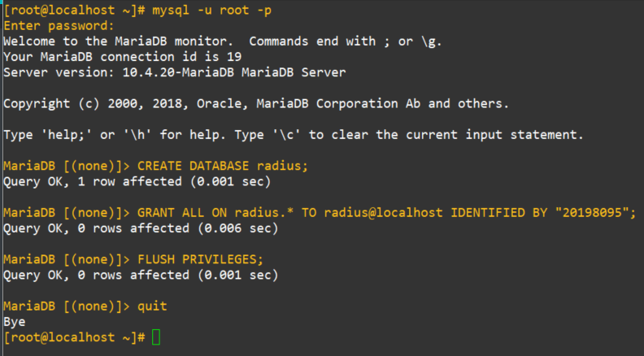
Instalaremos todos los módulos requeridos y php con la siguiente secuencia de comandos.
xxxxxxxxxxsudo yum -y install epel-releasesudo yum -y install http://rpms.remirepo.net/enterprise/remi-release-7.rpmsudo yum -y install yum-utilssudo yum-config-manager --disable remi-php54sudo yum-config-manager --enable remi-php72sudo yum -y install php php-{cli,curl,mysqlnd,devel,gd,pear,mcrypt,mbstring,xml,pear}La imagen será omitida en este paso debido a que son instalaciones comunes y básicas.
Instalado todo revisaremos la versión de php que hemos obtenido para ver si todo ha salido bien.
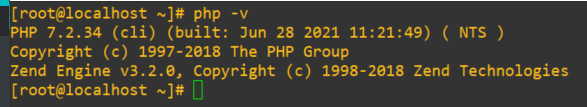
Este es uno de los pasos más esperados, lo primero que haremos es descargar todo lo referente a FreeRadius.
xxxxxxxxxxsudo yum -y install freeradius freeradius-utils freeradius-mysql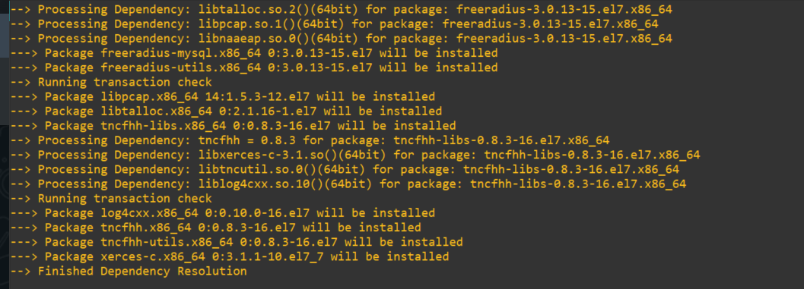
Inmediatamente procedemos a iniciar el servicio.
xxxxxxxxxx[root@localhost ~]# sudo systemctl enable --now radiusd.serviceCreated symlink from /etc/systemd/system/multi-user.target.wants/radiusd.service to /usr/lib/systemd/system/radiusd.service.Verificamos el estado del servicio.
xxxxxxxxxx[root@localhost ~]# systemctl status radiusd.service● radiusd.service - FreeRADIUS high performance RADIUS server. Loaded: loaded (/usr/lib/systemd/system/radiusd.service; enabled; vendor preset: disabled) Active: active (running) since Thu 2021-07-01 21:13:19 EDT; 1min 30s ago Process: 30562 ExecStart=/usr/sbin/radiusd -d /etc/raddb (code=exited, status=0/SUCCESS) Process: 30558 ExecStartPre=/usr/sbin/radiusd -C (code=exited, status=0/SUCCESS) Process: 30557 ExecStartPre=/bin/chown -R radiusd.radiusd /var/run/radiusd (code=exited, status=0/SUCCESS) Main PID: 30565 (radiusd) CGroup: /system.slice/radiusd.service └─30565 /usr/sbin/radiusd -d /etc/raddbSi nos dirigimos a la siguiente ruta /usr/lib/firewalld/services/radius.xml podemos verificar los puertos con los cuales trabaja Radius, vistos los puertos procederemos a habilitarlos con el siguiente comando.
xxxxxxxxxxsudo firewall-cmd --add-service={http,https,radius} --permanent # Habilitar puertossudo firewall-cmd --reload # Reiniciar el firewallsudo firewall-cmd --list-service # Para ver si se habilitaron los puertosEl primer paso será importa el database scheme a nuestra base de datos.
xxxxxxxxxxmysql -u root -p radius < /etc/raddb/mods-config/sql/main/mysql/schema.sql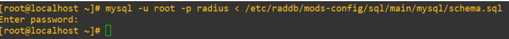
Ahora vamos a crear un soft link para SQL en /etc/raddb/mods-enabled
xxxxxxxxxxsudo ln -s /etc/raddb/mods-available/sql /etc/raddb/mods-enabled/Configuraremos el módulo SQL /raddb/mods-available/sql y cambiaremos los parámetros de conexión a la base de datos para adaptarlos a nuestro entorno.
xxxxxxxxxxsudo vi /etc/raddb/mods-available/sql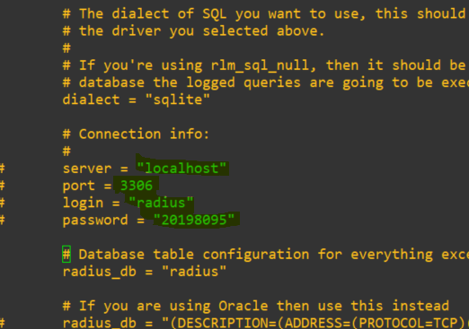
Ahora esta configuración se la pasaremos al grupo de radius.
xxxxxxxxxxsudo chgrp -h radiusd /etc/raddb/mods-enabled/sqlSiempre es bueno tener tener una interfaz gráfica que nos ayude a manejar alguna herramienta, en este caso vamos a configurar DolarRadius que viene siendo la interfaz gráfica que se puede fusionar con FreeRadius.
Instalaremos wget.
xxxxxxxxxxsudo yum -y install wgetInstalado wget procedemos a instalar el marter.zip de Daloradius.
xxxxxxxxxxwget https://github.com/lirantal/daloradius/archive/master.zip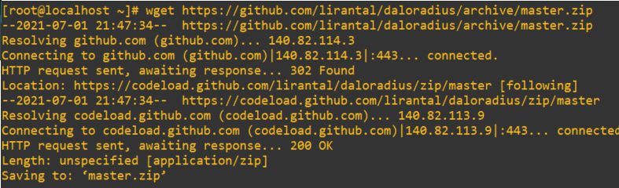
Obtenido el archivo lo descomprimimos y le cambiamos el nombre a la carpeta y le poner Daloradius
xxxxxxxxxxunzip master.zipmv daloradius-master/ daloradiusAccederemos al directorio de Daloradius e importaremos las tablas mysql que trae Daloradius.
xxxxxxxxxxmysql -u root -p radius < contrib/db/fr2-mysql-daloradius-and-freeradius.sql mysql -u root -p radius < contrib/db/mysql-daloradius.sql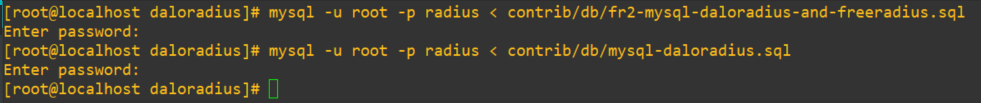
Moveremos el directorio daloradius a la ruta /var/www/html/
xxxxxxxxxxmv daloradius /var/www/html/Le cambiaremos los permisos a los correspondientes al servidor web en este caso el propietario lo tenemos que cambiar a Apache.
xxxxxxxxxxsudo chown -R apache:apache /var/www/html/daloradius/sudo chmod 664 /var/www/html/daloradius/library/daloradius.conf.phpAhora accederemos a daloradius.conf.php.sample para poder configurar la info sobre la base de datos que necesita daloradius para funcionar
xxxxxxxxxxnano /var/www/html/daloradius/library/daloradius.conf.php## Estos son los parámetros necesarios a tomar en cuenta para la conf$configValues['CONFIG_DB_HOST'] = 'localhost';$configValues['CONFIG_DB_PORT'] = '3306';$configValues['CONFIG_DB_USER'] = 'radius';$configValues['CONFIG_DB_PASS'] = '20198095';$configValues['CONFIG_DB_NAME'] = 'radius';Cuando tengamos esto listo haremos un cp de este archivo y lo nombraremos daloradius.conf.php.
xxxxxxxxxxcp daloradius.conf.php.sample daloradius.conf.phpHecho esto ya tendremos todo debidamente configurado, por lo tanto solo nos queda reiniciar los servicios.
xxxxxxxxxxsystemctl restart radiusdsystemctl restart httpdsystemctl restart mariadb
Listo ya podemos acceder vía web http://{tu ip}/daloradius/login.php
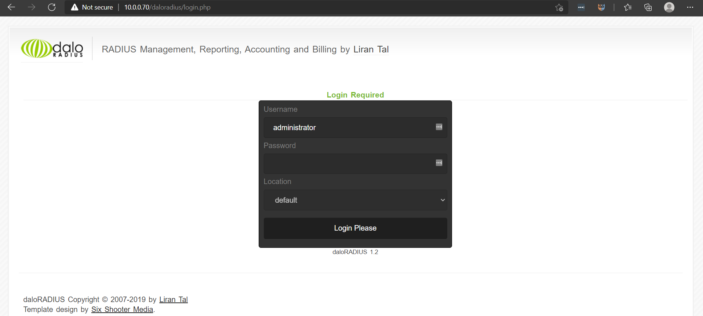
Default credentials:
User: administrator
Password: radius
Ya veremos la interfaz por dentro.
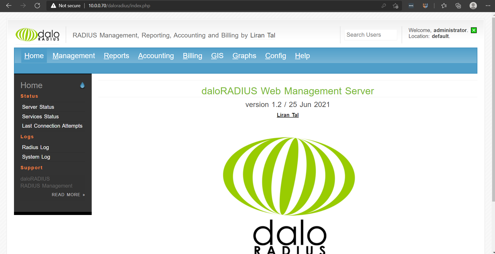
Tenemos los dispositivos con la siguiente según mostrado en la imagen.
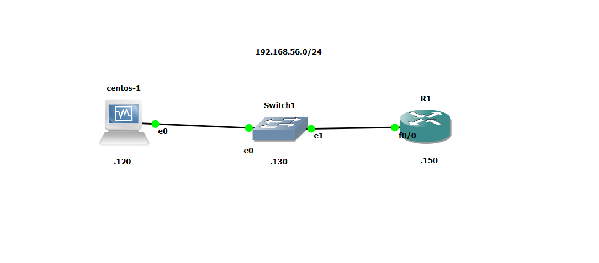
Lo primero que haremos es modificar ciertos archivos de configuración de nuestro servidor Radius para la autenticación
El primer archivo a modificar será nuestro nuestro archivo user que se encuentra en la siguiente dirección /etc/raddb/
xxxxxxxxxx nano /etc/raddb/usersLo que haremos en dicho archivo será agregar los usuarios con los cuales se va autenticar nuestro router a la hora en la cual accedan a el por ssh. 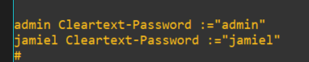
Los usuarios tienes que tener el siguiente formato
{Nombre del user} Cleartext-Password :="{password}"
Ya indicados los usuarios nos vamos a dirigir al archivo clients.conf, allí vamos a configurar el cliente que viene siendo el router.
xxxxxxxxxxnano /etc/raddb/clients.conf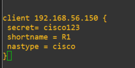
client {ip del client (Router, switch...)}
secret: Contraseña con la cual el router tendrá se va a auntenticar con nuestro servidor radius.
shortname: nombre del host.
nastype: marca del dispositivo.
Hecho todo esto, ya nos vamos para el lado del cliente par realizar la configuración correspondiente.
Lo primero que haremos es indicarle que vamos a configurar un modelo aaa.
xxxxxxxxxx aaa new-modelLo segundo que haremos es indicarle al router que para la autentificación primero use nuestro serv radius y si no se encuentra disponible use la db local.
xxxxxxxxxx aaa authentication login default group radius localHecho esto vamos a proceder a crear un user local dentro del router en caso de que el serv radius no esté disponible.
xxxxxxxxxx Username {nombre} password {clave}Ahora vamos a indicarle a nuestro router quien es el servidor radius y en conjunto le daremos un nombre el cual le pusimos host, a esto le añadimos también el puerto por donde se va autenticar nuestro router y el puerto acc, y por último la clave con la cual va a acceder.
xxxxxxxxxxradius-server host 192.168.56.120 auth-port 1812 acct-port 1813 key cisco123Designamos el hostname y el nombre del dominio.
xxxxxxxxxxhostname R1ip domain-name jamiel.comAhora generaremos un par de llaves encriptadas con el siguiente comando.
xxxxxxxxxxcrypto key generate rsa modulus 1024Cambiaremos de el ssh a su versión 2.
xxxxxxxxxxip ssh version 2Como último paso configuraremos las lineas vty con una autentificación por default.
xxxxxxxxxxline vty 0 15transport input sshlogin authentication defaultAquí dejaremos una evidencia de que realicé dicha configuración. 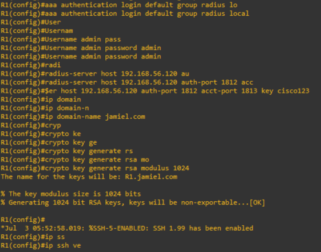 Realizado esto llegamos al paso final de las configuraciones ahora entraremos a la fase de testeo, donde confirmaremos si todo lo que se hizo se realizó correctamente.
Ya como paso final solo nos queda probar para esto nos dirigiremos a nuestro servidor radius e intentaremos acceder con uno de los usuarios que creamos en radius, si este user accede al router de manera normal la operación ha sido un éxito.
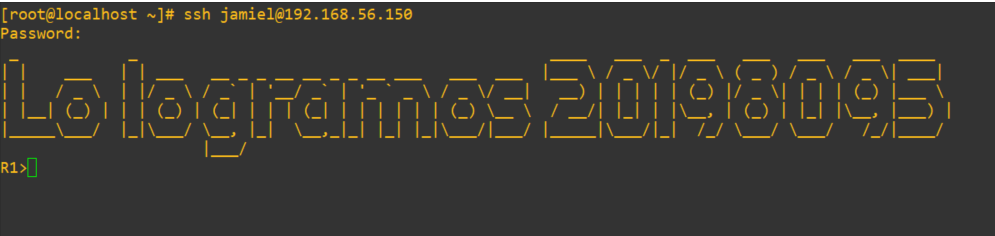
Como podemos ver en la imagen todo ha salido correctamente!!!!